函数是数学中的一个重要内容。在人类科技、经济、军事等各个领域的发展过程中，出现了很多需要用“变量数学”描述和解决的实际问题。比如在航海中如何精确测量经纬度和航行方向，在军事上如何精确计算炮弹的运动轨迹与发射速度、空气阻力之间的关系等。这些实际需要促进了“函数”思想方法的研究和发展。函数思想方法的实质就是当遇到实际问题的时候，通过对问题的分析理解，先利用函数知识构造出解决问题的函数关系式，进而通过对函数问题的研究，使问题得以解决的一种数学思想方法。
函数的传统定义是从运动变化的观点出发。一般的，在一个变化过程中，有两个变量x和y，如果给定一个x值，相应的就能确定唯一的一个y值，那么就称y是x的函数。其中，x称为自变量，y称为因变量，x的取值范围称为这个函数的定义域，相应y的取值范围称为函数的值域。
函数的近代定义是从集合、映射的观点出发。设A和B是两个非空集合，如果按照某种确定的对应关系f，使得对于集合A中的任意一个元素x，在集合B中都有唯一确定的元素y和它对应，那么就称f：A→B为从集合A到集合B的一个函数，记作y=f(x),x∈A或f(A)={y|f(x)=y,y∈B}。其中，x称为自变量，y称为因变量，集合A称为函数的定义域，与x对应的y称为函数值，函数值的集合{f(x)|x∈A}称为函数的值域。定义域、值域和对应法则称为函数的三要素，一般写成y=f(x),x∈D。若省略定义域，一般是指使函数有意义的集合。函数的对应法则一般用解析式表示，但大量的函数关系是无法用解析式表示的，此时可以用图像、表格及其他形式表示。
函数与不等式、方程都存在着一定的联系。令函数值等于零，从几何角度看，对应的自变量的值就是图像与X轴的交点的横坐标。从代数角度看，对应的自变量是方程的解。另外，把函数的表达式（无表达式的函数除外）中的“=”换成“＜”或“＞”，再把“y”换成其他代数式，函数就变成了不等式，可以求自变量的范围。
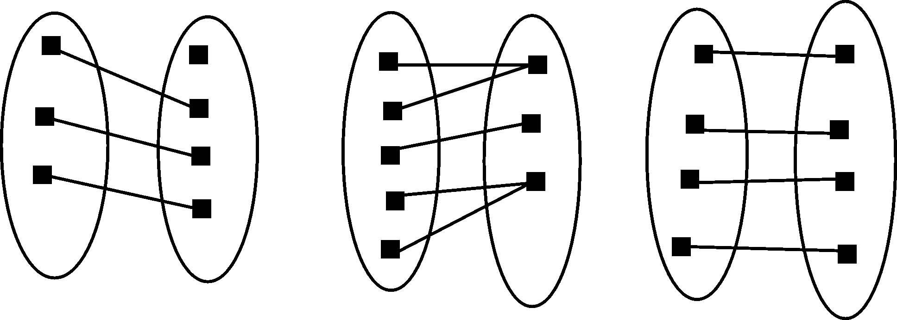
图7.1-1 单射函数、满射函数和双射函数
函数可以分为单射函数、满射函数、双射函数。单射函数是将不同的变量映射到不同的值，即：若x1 ，x2 ∈X，则当x1 ≠x2 时有f(x1 )≠f(x2 )。满射函数是指其值域即为其对映域，即：对映射f的对映域中之任意y，都存在至少一个x满足y=f（x）。双射函数既是单射的，又是满射的，也叫一一对应，双射函数经常被用于表明集合X和Y是等势的，即有一样的基数。如图7.1-1所示。
在自变量的不同变化范围内，对应法则用不同解析式来表示的函数，称为分段函数。分段函数的定义域是各段定义域的并集。
设函数y=f(μ)的定义域为Df，函数μ=φ(x)在D上有定义（D是构成符合函数的定义域，它可以是μ=φ(x)定义域的一个非空子集），且φ(D)=Df，则函数y=f[φ(x)]称为由函数μ=φ(x)和函数y=f(μ)构成的复合函数，它的定义域为D，变量μ称为中间变量。并不是任何两个函数都可以复合成一个复合函数，若D为空集，则μ=φ(x)和函数y=f(μ)不能复合。
一般地，设函数y=f(x),x∈D，值域是W，对于每一个属于W的y，有唯一的x属于D，使得f（x）=y，这时变量x也是变量y的函数，称为y=f（x）的反函数，记作x=f-1(y)。而习惯上y=f（x）的反函数记为y=f-1(x),x∈W。只有一一对应的函数才有反函数。而若函数是定义在其定义域D上的单调递增或单调递减函数，则其反函数在其定义域W上单调递增或递减。原函数与反函数之间关于y=x对称。
1．有界性
设函数f（x）在区间X上有定义，如果存在M＞0，对于一切属于区间X上的x，恒有｜f（x）｜≤M，则称f（x）在区间X上有界，否则称f（x）在区间上无界。
极值定理：当函数f（x）在闭区间［a，b］上是连续函数时，存在属于［a，b］的c和d，有f（c）≤f（x）≤f（d），x∈［a，b］成立（一定存在最大值和最小值）。
2．单调性
设函数f（x）的定义域为D，I∈D。如果对于区间I的上任意两点x1 和x2 ，当x1 ＜x2 时，恒有f（x1 ）＜f（x2 ），则称函数f（x）在区间I上是单调递增的；如果对于区间I上任意两点x1 和x2 ，当x1 ＜x2 时，恒有f（x1 ）＞f（x2 ），则称函数f（x）在区间I上是单调递减的。单调递增和单调递减的函数统称为单调函数。
3．奇偶性
设f（x）为一个定义域、值域都为实数的函数，若有f（x）＝-f（-x），则f（x）为奇函数。几何上，一个奇函数关于原点对称，即其图像在绕原点做180度旋转后不会改变。奇函数的例子有x、sin（x）等。
设f（x）为一个定义域、值域都为实数的函数，若有f（x）＝f（-x），则f（x）为偶函数。几何上，一个偶函数关于y轴对称，即其图在对y轴映射后不会改变。偶函数的例子有|x|、x2 、cos（x）等。偶函数不可能是个双射映射。
4．周期性
设函数f（x）的定义域为D。如果存在一个正数T，使得对于任一x∈D有(x±T)∈D，且f（x+T）=f（x）恒成立，则称f（x）为周期函数，T称为f（x）的周期，通常我们说周期函数的周期是指最小正周期（一般表示成T*）。
周期函数的定义域D为至少一边的无界区间，若D为有界的，则该函数不具周期性。并非每个周期函数都有最小正周期，例如狄利克雷函数：
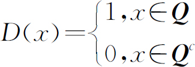
周期函数有以下几个性质：
（1）若T（T≠0）是f（x）的周期，则-T也是f（x）的周期。
（2）若T（T≠0）是f（x）的周期，则n*T（n为任意非零整数）也是f（x）的周期。
（3）若T1 与T2 都是f（x）的周期，则T1 +T2 、T1 -T2 也是f（x）的周期。
（4）若f（x）有最小正周期T*，那么f（x）的任何正周期T一定是T*的正整数倍。
（5）如T*是f（x）的最小正周期，且T1 、T2 分别是f（x）的两个周期，则T1 /T2 ∈Q （Q 是有理数集）
（6）若T1 、T2 是f（x）的两个周期，且T1 /T2 是无理数，则f（x）不存在最小正周期。
（7）周期函数f（x）的定义域M必定是双方无界的集合。
5．连续性
函数y=f（x）当自变量x的变化很小时，所引起的因变量y的变化也很小。例如，气温随时间变化，只要时间变化很小，气温的变化也是很小的。又如，自由落体的位移随时间变化，只要时间变化足够短，位移的变化也是很小的。对于这种现象，我们说因变量关于自变量是连续变化的，可用极限给出严格描述：设函数y=f（x）在x0 点附近有定义，如果有lim（x->x0 ）f（x）=f（x0 ），则称函数f在x0 点连续。如果定义在区间I上的函数在每一点x∈I都连续，则说f在I上连续，此时，它在直角坐标系中的图像是一条没有断裂的连续曲线。
6．凹凸性
设函数f（x）在I上连续。如果对于I上的两点x≠y，a∈（0，1），恒有：
f(ax+(1-a)y)≤af(x)+(1-a)f(y)
f(ax+(1-a)y)＜af(x)+(1-a)f(y)
那么，称第一个不等式中的f（x）是区间I上的凸函数，称第二个不等式中的 f（x）为严格凸函数。
同理，如果恒有：
f(ax+(1-a)y)≥af(x)+(1-a)f(y)
f(ax+(1-a)y)＞af(x)+(1-a)f(y)
那么，称第一个不等式中的f（x）是区间I上的凹函数，称第二个不等式中的f（x）为严格凹函数。
凸（凹）函数也可以称为单峰函数。怎么判断一个函数的凹凸性呢？在代数上只要看导数值的正负，如果函数的一阶导数和二阶导数是异号（一正一负或者一负一正），则函数便是凸的。如果一阶导数与二阶导数是同号，则函数就是凹的。函数在凹凸性发生改变的点称为“拐点”，拐点的二阶导数为0或不存在二阶导数。
函数种类繁多，我们接触使用较多的主要是基本初等函数。另外，在计算机学科里还经常用到多项式函数。
1．基本初等函数
基本初等函数包括幂函数、指数函数、对数函数、三角函数和反三角函数等。
幂函数是形如y=xa 的函数，a可以是自然数、有理数，也可以是任意实数或复数。如图7.1-2所示。
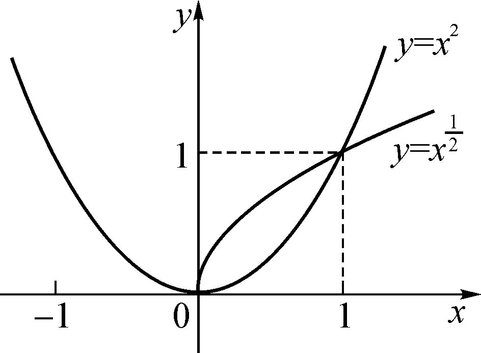 |
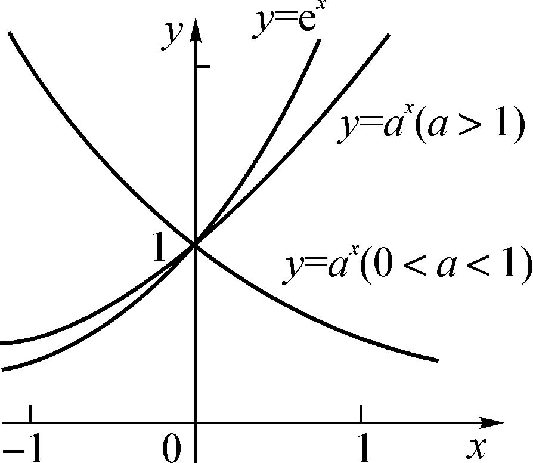 |
| 图7.1-2 幂函数 | 图7.1-3 指数函数 |
指数函数是形如y=ax （a＞0，a≠1），定义域为(-∞,+∞)，值域为(0,+∞)，在a＞1时，是单调递增函数，在0＜a＜1时，是单调递减函数。不论a为何值，图像过定点（0，1）。如图7.1-3所示。
对数函数是形如y=loga x(a＞0)，称a为底，定义域为(0,+∞)，值域为(-∞,+∞)。在a＞1时，是单调递增函数，在0＜a＜1时，是单调递减函数。不论a为何值，图像均过定点（1，0），对数函数与指数函数互为反函数。以10为底的对数称为常用对数，简记为lg(x)。在计算机及科学技术中普遍使用的是以e为底的对数，即自然对数，记作ln(x)。
三角函数属于初等函数中超越函数的一类函数。它们的本质是任意角的集合与一个比值的集合的变量之间的映射。通常的三角函数是在平面直角坐标系中定义的，其定义域为整个实数域。它有六种基本函数：正弦函数，余弦函数，正切函数，余切函数，正割函数和余割函数。
2．多项式函数
形如Pn （x）=an x^n+an-1 x^（n-1）+…+a1 x+a0 的函数，叫做多项式函数，它是由常数与自变量x经过有限次乘法与加法运算得到的。
形如y=kx+b（k为任意不为0的常数，b为任意常数）的函数，叫做一次函数（Linear Function），也称线性函数，其图像在平面直角坐标系中可以用一条直线表示。当一次函数中的一个变量的值确定时，可以用一元一次方程确定另一个变量的值。如图7.1-4所示。
形如y=ax^2+bx+c的函数，叫做二次函数（Quadratic Function）。二次函数是自变量的最高次数为二次的多项式函数。其图像在平面直角坐标系中呈一条抛物线。如图7.1-5所示。
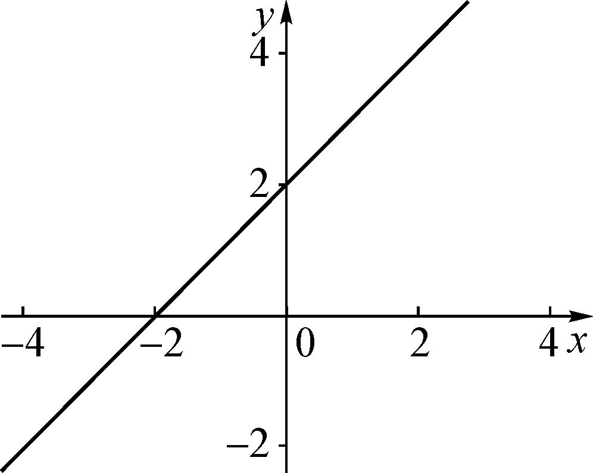 |
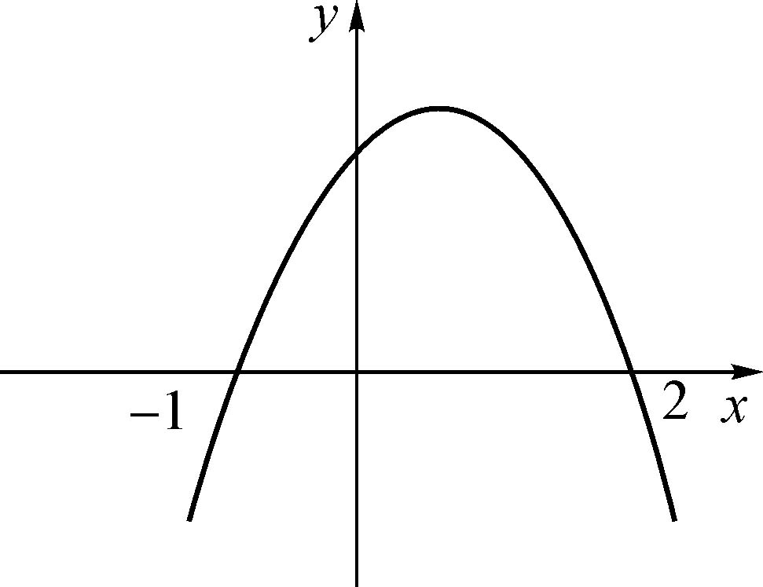 |
| 图7.1-4 一次函数 | 图7.1-5 二次函数 |
二次函数y=a（x-h）^2+k的对称轴为x=h，顶点坐标是（h，k）。一般地，我们可以用配方法求抛物线y=ax^2+bx+c （a≠0）的顶点与对称轴。因为：
y=ax^2+bx+c=a（x+b/2a）^2+（4ac-b^2）/4a
因此，抛物线y=ax^2+bx+c的对称轴是 x=-（b/2a），顶点坐标是 （-（b/2a），（4ac-b^2）/4a）。
除一次函数、二次函数外，多项式函数还有三次函数、四次函数等。
【例7.1-1】 某厂要用铁板做一个体积为2个立方的有盖长方体水箱，问当长、宽、高各取怎样的尺寸时，才能使用料最省？
【问题分析】
设水箱长、宽分别为x和y米，则高为
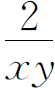
米，则水箱使用材料的面积为：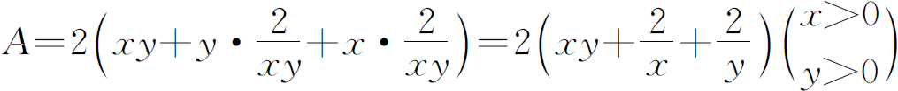
令
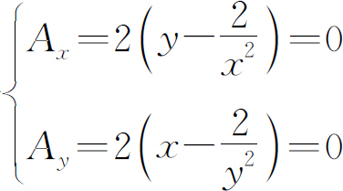
得驻点 (1)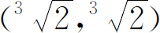
根据实际问题可知最小值在定义域内应存在，因此可以断定此唯一驻点就是最小值点。即当长、宽均为
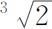
，高为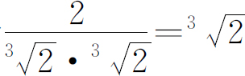
时，水箱所用材料最省。【例7.1-2】 某工厂生产两种产品1与2，出售单位分别为10元与9元，生产x单位的产品1与生产y单位的产品2的总费用是：
400+2x+3y+0.01(3x2 +xy+3y2 )
求两种产品各生产多少，工厂可以取得最大利润。
【问题分析】
设利润函数为L(x,y)，则：
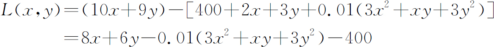
L(x,y)=8x+6y-0.01(3x2 +xy+3y2 )-400
解方程组：
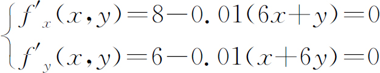
得区域D内唯一驻点（120，80），
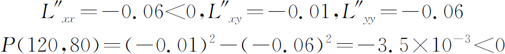
故（120，80）为极大值点，由于只有一个驻点，故为最大值点。
【例7.1-3】 采摘花生（NOIP2004，peanuts．*，64MB，1秒）
【问题描述】
鲁宾逊先生有一只宠物猴，名叫多多。这天，他们两个正沿着乡间小路散步，突然发现路边的告示牌上贴着一张小小的纸条：“欢迎免费品尝我种的花生!——熊字”。
鲁宾逊先生和多多都很开心，因为花生正是他们的最爱。在告示牌背后，路边真的有一块花生田，花生植株整齐地排列成矩形网格（如图7.1-6左图）。有经验的多多一眼就能看出，每棵花生植株下的花生有多少。为了训练多多的算术，鲁宾逊先生说：“你先找出花生最多的植株，去采摘它的花生；然后再找出剩下的植株里花生最多的，去采摘它的花生；依此类推，不过你一定要在我限定的时间内回到路边。”
我们假定多多在每个单位时间内，可以做下列四件事情中的一件：
1．从路边跳到最靠近路边（即第一行）的某棵花生植株；
2．从一棵植株跳到前后左右与之相邻的另一棵植株；
3．采摘一棵植株下的花生；
4．从最靠近路边（即第一行）的某棵花生植株跳回路边。
现在给定一块花生田的大小和花生的分布，请问在限定时间内，多多最多可以采到多少个花生？注意可能只有部分植株下面长有花生，假设这些植株下的花生个数各不相同。
例如在图7.1-6右图所示的花生田里，只有位于（2，5），（3，7），（4，2），（5，4）的植株下长有花生，个数分别为13，7，15，9。沿着图示的路线，多多在21个单位时间内，最多可以采到37个花生。
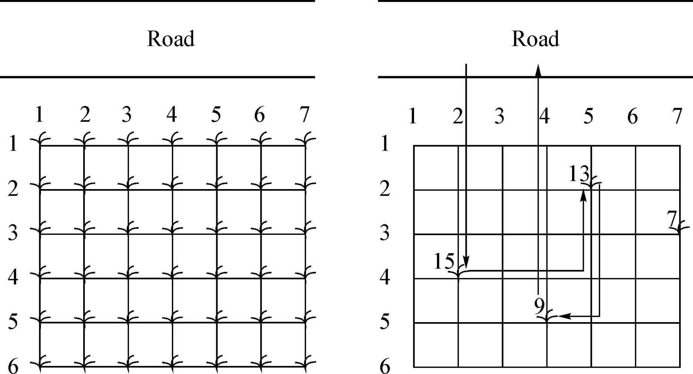
图7.1-6 采摘花生示意图
【输入格式】
输入文件第一行包括三个整数M，N和K，用一个空格隔开，表示花生田的大小为M * N（1≤M，N≤20），多多采花生的限定时间为K（0≤K≤1000）个单位时间。
接下来的M行，每行包括N个非负整数，也用一个空格隔开；第i+1行的第j个整数Pij （0≤Pij ≤500）表示花生田里植株（i，j）下花生的数目，0表示该植株下没有花生。
【输出格式】
输出文件仅一行一个整数，即在限定时间内多多最多可以采到花生的个数。
【输入样例1】
6 7 21
0 0 0 0 0 0 0
0 0 0 0 13 0 0
0 0 0 0 0 0 7
0 15 0 0 0 0 0
0 0 0 9 0 0 0
0 0 0 0 0 0 0
【输出样例1】
37
【输入样例2】
6 7 20
0 0 0 0 0 0 0
0 0 0 0 13 0 0
0 0 0 0 0 0 7
0 15 0 0 0 0 0
0 0 0 9 0 0 0
0 0 0 0 0 0 0
【输出样例2】
28
【问题分析】
因为花生的采摘顺序已经确定（从大到小），因此只要考虑如何在最短时间内从一颗植株跳到另一颗植株，以及什么时候停止。
对于第一个问题：由于在地图中跳向相邻一格花费时间是1，因此两点间的最短距离就是曼哈顿距离：abs（x1 -x2 ）+abs（y1 -y2 ）。
对于第二个问题：显然对于j＞i，
abs（x［i］-x［i+1］）+abs（y［i］-y［i+1］）+abs（x［i+1］-x［i+2］）+abs（y［i+1］-y［i+2］）…+abs（x［j-1］-x［j］）+abs（y［j-1］-y［j］）+x［j］
≤abs（x［i］-x［i+1］）+abs（x［i+1］-x［i+2］）…+abs（x［j-1］-x［j］）+x［j］
≤（x［i］-x［i+1］）+（x［i+1］-x［i+2］）…+（x［j-1］-x［j］）+x［j］
≤x［i］
也就是说，从当前植株i跳回路边花的时间小于等于跳到另一些植株后再跳回路边花的时间，因此如果在当前植株来不及跳回路边，以后就永远来不及跳回路边了。
综上所述，先将花生从大到小排序，每次尝试跳到下一棵植株，如果此时已经来不及跳回路边，就立即停止（这次的花生并没有采摘到），从上一次的植株直接跳回路边，否则就采摘这次的花生。
【参考程序】
#include＜bits/stdc++．h＞
using namespace std;
structposs{
intx，y，value;
}p［402］;
intm，n，k，t，ans;
boolcmp（possa，poss b）{
returna．value＞b．value;
}
int main（）{
scanf（"%d%d%d"，＆n，＆m，＆k）;
for（inti=1;i＜=n;i++）
for（int j=1;j＜=m;j++）{
p［++t］=（poss）{i，j，0};
scanf（"%d"，＆p［t］．value）;
}
sort（＆p［1］，＆p［n*m+1］，cmp）;
p［0］．x=0;
p［0］．y=p［1］．y;
for（inti=1;i＜=n*m;i++）{
k-=abs（p［i-1］．x-p［i］．x）+abs（p［i-1］．y-p［i］．y）+1;
if（k＜p［i］．x）break;
ans+=p［i］．value;
}
printf（"%d＼n"，ans）;
return 0;
}
在上一节中已经介绍了函数的单调性和连续性。一般地，对于函数f（x），如果存在实数c，当x=c时，f（c）=0，那么，把x=c叫做函数f（x）的“零点”。
对于在区间［a，b］上连续不断，且满足f（a）*f（b）＜0的函数y=f（x），通过不断地把函数f（x）的零点所在的区间一分为二，使区间的两个端点逐步逼近零点，进而求得零点近似值的方法叫做“二分法”。如果函数是单调函数，则零点是唯一的。由函数的零点与相应方程根的关系，可用二分法来求方程的近似解。
给定精确度ξ，用二分法求函数f（x）零点近似值的步骤如下：
1．确定区间［a，b］，验证f（a）*f（b）＜0，给定精确度ξ；
2．求区间［a，b］的中点x1 ；
3．计算f（x1 ）：
3．1．若f（x1 ）=0，则x1 就是函数的零点；
3．2．若f（a）*f（x1 ）＜0，则令b=x1 ；
3．3．若f（x1 ）*f（b）＜0，则令a=x1 ；
4．判断是否达到精确度ξ：即若|a-b|＜ξ，则得到零点近似值a（或b），否则重复步骤2到步骤4。
用二分法求一个函数的零点近似值的方法必须满足以下条件：其图像在零点附近是连续不断的，且该零点为变号零点。
【例7.2-1】 判断函数y=x^3-x-1 在区间［1，1.5］内有无零点，如果有求出一个近似零点（精确度为0.1）。
【问题分析】
因为f（1）=-1＜0，f（1.5）=0.875＞0，且函数y=x^3-x-1的图像是连续的曲线，所以，它在区间［1，1.5］内有零点。用二分法逐次计算，列表如下：
| 区间 | 中点值 | 中点函数近似值 |
| ［1，1.5］ | 1.25 | -0.3 |
| ［1.25，1.5］ | 1.375 | 0.22 |
| ［1.25，1.375］ | 1.312 5 | -0.05 |
| ［1.3125，1.375］ | 1.343 75 | 0.08 |
由于|1.375-1.3125|=0.0625＜0.1，所以函数的一个近似零点为1.3125。
【例7.2-2】 求
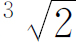
的近似解（精确度为0.01，并将结果也精确到0.01）。【问题分析】
设x= ，则x^3-2=0。令f（x）=x^3-2 ，则函数f（x）的零点的近似值就是 的近似值。
由于f（1）=-1 ＜ 0，f（2）=6 ＞ 0，故可以取区间［1，2］作为计算的初始区间。采用二分法求其零点的近似值列表如下：
| 区间 | 中点值 | 中点函数近似值 |
| ［1，2］ | 1.5 | 1.375 |
| ［1，1.5］ | 1.25 | -0.0469 |
| ［1.25，1.5］ | 1.375 | 0.5996 |
| ［1.25，1.375］ | 1.3125 | 0.261 |
| ［1.25，1.3125］ | 1.28125 | 0.1033 |
| ［1.25，1.28125］ | 1.265625 | 0.0273 |
| ［1.25，1.265625］ | 1.2578125 | -0.01 |
| ［1.2578125，1.265625］ | 1.26171875 | 0.0086 |
由于|1.265625-1.2578125|=0.00781＜0.01，所以函数f（x）零点的近似值是1.26，即
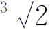
的近似值是1.26。【例7.2-3】 Solve It（UVA10341）
【问题描述】
Solve the equation：
p*e^-x+q*sin（x）+r*cos（x）+s*tan（x）+t*x^2+u=0
where 0≤x≤1．
【输入格式】
Input consists of multiple test cases and terminated by an EOF．Each test case consists of 6 integers in a single line∶p，q，r，s，t，u．where 0≤p，r≤20 and-20≤q，s，t≤0．There will be maximum 2100 lines in the input file．
【输出格式】
For each set of input，there should be a line containing the value of x，correct upto 4 decimal places，or the string "No solution"，whichever is applicable．
【输入样例】
0 0 0 0 -2 1
1 0 0 0 -1 2
1 -1 1 -1 -1 1
【输出样例】
0.7071
No solution
0.7554
【问题分析】
设：f(x)=pe-x +q sin(x)+r cos(x)+s tan(x)+tx2 +u
则：f′(x)=-pe-x +q cos(x)-r sin(x)+s*cos(x)-2 +2tx，（p≤0，r≤0）
所以f′(x)＜0，函数在［0，1］内单调递减，可以用二分来求根。
【参考程序】
#include＜bits/stdc++．h＞
using namespace std;
const double eps=1e-10;
double p，q，r，s，t，u;
inline double f（double x）{
return p*exp（-x）+q*sin（x）+r*cos（x）+s*tan（x）+t*x*x+u;
}
int main（）{
while（scanf（"%lf%lf%lf%lf%lf%lf"，＆p，＆q，＆r，＆s，＆t，＆u）!=-1）{
double l=0，r=1;
if（f（l）*f（r）＞0）{
printf（"No solution＼n"）;
continue;
}
while（r-l＞=eps）{
double mid=（l+r）/2;
if（f（mid）＞0）
l=mid;
else
r=mid;
}
printf（"%．4f＼n"，l）;
}
return 0;
}
【例7.2-4】 River Hopscotch（POJ3258）
【问题描述】
Every year the cows hold an event featuring a peculiar version of hopscotch that involves carefully jumping from rock to rock in a river．The excitement takes place on a long，straight river with a rock at the start and another rock at the end，L units away from the start （1≤L≤1，000，000，000）．Along the river between the starting and ending rocks，N （0≤N≤50，000）more rocks appear，each at an integral distance Di from the start （0＜Di ＜L）．
To play the game，each cow in turn starts at the starting rock and tries to reach the finish at the ending rock，jumping only from rock to rock．Of course，less agile cows never make it to the final rock，ending up instead in the river．
Farmer John is proud of his cows and watches this event each year．But as time goes by，he tires of watching the timid cows of the other farmers limp across the short distances between rocks placed too closely together．He plans to remove several rocks in order to increase the shortest distance a cow will have to jump to reach the end．He knows he cannot remove the starting and ending rocks，but he calculates that he has enough resources to remove up to M rocks （0≤M≤N）．
FJ wants to know exactly how much he can increase the shortest distance *before* he starts removing the rocks．Help Farmer John determine the greatest possible shortest distance a cow has to jump after removing the optimal set of M rocks．
【输入格式】
Line 1： Three space-separated integers： L，N，and M．
Lines 2．．N+1： Each line contains a single integer indicating how far some rock is away from the starting rock．No two rocks share the same position．
【输出格式】
Line 1： A single integer that is the maximum of the shortest distance a cow has to jump after removing M rocks．
【输入样例】
25 5 2
2
14
11
21
17
【输出样例】
4
【样例解释】
Before removing any rocks，the shortest jump was a jump of 2 from 0 （the start）to 2．After removing the rocks at 2 and 14，the shortest required jump is a jump of 4 （from 17 to 21 or from 21 to 25）．
【问题分析】
题目大意是一条长L的河上，除了START（0）和END（L）还有N个石子，分别距离START di，求去掉M个石子后相邻石子的最小距离的最大值。
定义函数c（x）是求距离x能否留下N-M个石子。若c（x）为true，则存在相同的方案使得c（x-a）（a＞0，a∈Z ）为true，可以二分。从左往右，如果2个石子的距离小于x则去掉右边的石子，若右边的石子为END则去掉左边的石子，判断是否能留下N-M个石子。
【参考程序】
#include＜bits/stdc++．h＞
using namespace std;
int L，n，m;
int a［50005］;
bool ok（int c）{
int sum=m，la=0;
for（int i=1;i＜=n;i++）
if（la+c＜=a［i］）
la=a［i］;
else
if（!（sum--））
return 0;
if（la+c＞L）
if（!（sum--））
return 0;
return 1;
}
int main（）{
scanf（"%d%d%d"，＆L，＆n，＆m）;
for（int i=1;i＜=n;i++）
scanf（"%d"，＆a［i］）;
sort（＆a［1］，＆a［n+1］）;
int l=0，r=L;
while（l!=r）{
int mid=l+r+1＞＞1;
if（ok（mid））
l=mid;
else
r=mid-1;
}
printf（"%d＼n"，l）;
return 0;
}
【例7.2-5】 Expanding Rods（POJ1905）
【问题描述】
When a thin rod of length L is heated n degrees，it expands to a new length L'=（1+n*C）*L，where C is the coefficient of heat expansion．
When a thin rod is mounted on two solid walls and then heated，it expands and takes the shape of a circular segment，the original rod being the chord of the segment．
Your task is to compute the distance by which the center of the rod is displaced．
【输入格式】
The input contains multiple lines．Each line of input contains three non-negative numbers： the initial lenth of the rod in millimeters，the temperature change in degrees and the coefficient of heat expansion of the material．Input data guarantee that no rod expands by more than one half of its original length．The last line of input contains three negative numbers and it should not be processed．
【输出格式】
For each line of input，output one line with the displacement of the center of the rod in millimeters with 3 digits of precision．
【输入样例】
1000 100 0.0001
15000 10 0.00006
10 0 0.001
-1 -1 -1
【输出样例】
61.329
225.020
0.000
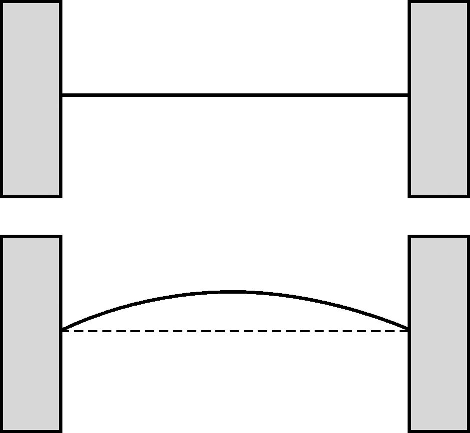
图7.2-1 变化示意图
【问题分析】
题目大意是一根横在两堵墙之间的木棒受热膨胀后，变为弧形，求弧形中点与原木棒中点的距离，给出木棒原长度Len，膨胀系数Coe，加热的度数n，膨胀n度后长度为S=Len*（1+n*Coe）；这样根据一些数学知识就可以得到下面三个式子：
1．R^2-Len^2/4=（R-H）^2；
2．sinθ=Len/2R；
3．θ=S/2R；
由一系列变换可求出S0 =R*asin（Len/2R），其中R=（H^2+Len^2/4）/2H。用二分枚举H的长度，找到一个H使得S0 =S即可。
【参考程序】
#include＜bits/stdc++．h＞
using namespace std;
const double eps=1e-7;
double Len，Coe，n;
double l，r，mid;
double R，S;
int main（）{
while（1）{
scanf（"%lf%lf%lf"，＆Len，＆n，＆Coe）;
if（Len＜0）break;
l=0，r=Len/2;
S=（1+n*Coe）*Len;
while（r-l＞=eps）{
mid=（l+r）/2;
R=（mid*mid+Len*Len/4）/（2*mid）;
if（R*asin（Len/（2*R））*2＜S）
l=mid;
else
r=mid;
}
printf（"%．3lf＼n"，mid）;
}
return 0;
}
在上一节中已经介绍了函数的单调性。对于具有单调性的函数，我们可以使用“二分法”求解。当函数不具有单调性、但具有凹凸性时，我们可以使用“三分法”求解。
如图7.3-1所示，虽然该函数不单调，但是该函数只有一个峰值，峰值左右两端分别单调递增、单调递减。
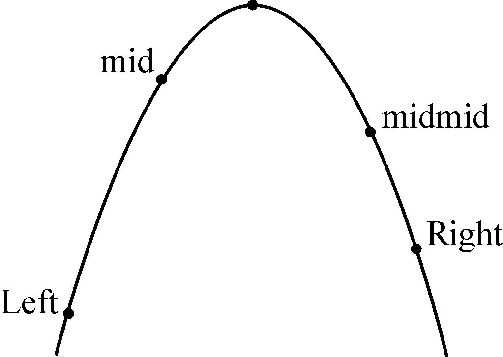
图7.3-1 单峰函数
用三分法求解单峰函数极值的基本思路如下：假设我们要求单峰函数f（x）的最大值，规定left和right是答案所在区间。设mid和midmid分别是left和right之间的三等分点。若f（mid）≤f（midmid），则舍去left到mid区间，否则舍去midmid到right区间。因为f（midmid）比f（left）到f（mid）区间里任何值都大，最大值永远不可能在舍去的区间里。当right-left小于规定精度即找到了答案。
三分法的程序实现如下：
//EPS是规定的精度，如1e-7，left+EPS＜right即停止程序，找到答案
void Solve（void）
{
double Left，Right;
double mid1，mid2;
double mid1_value，mid2_value;
Left=MIN; Right=MAX;
while （Left+EPS ＜ Right）
{
mid1=（Left*2+Right）/ 2;
mid2=（Left+Right*2）/ 2;
mid1_ value=Calc（mid1）;
mid2_ value=Calc（mid2）;
// 假设求解最大极值．
if （mid1_ value ＞=mid2_ value）Right=mid2;
else Left=mid1;
}
}
以上算法中，因为每次都使区间长度变为了原来的2/3，所以算法的时间复杂度是Θ（
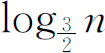
）。需要特别注意的是：三分法的应用条件是函数严格凹凸（可以感性地理解为这个函数只有一个峰并且没有平台），如图7.3-2所示的函数（mid1和mid2之间是一个平台）是不能使用的：
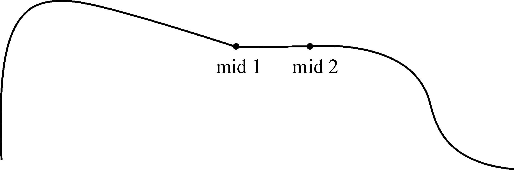
图7.3-2 非单峰函数
因为：我们规定，当f（mid1）=f（mid2）时，可以任意舍弃一段。如图7.3-2所示，如果我们舍弃mid左边的一段，那么就把最大值所在部分舍去了。
【例7.3-1】 玩具（BZOJ1229）
【问题描述】
Bessie的生日快到了，她希望用D（1≤D≤100000，70%的测试数据都满足1 ≤D≤500）天来庆祝。
奶牛们的注意力不会太集中。因此，Bessie想通过提供玩具的方式来使它们高兴。她已经计算出了第i天需要的玩具数T_i（1≤T_i≤50）。
Bessie的幼儿园提供了许多服务给它们的奶牛程序员们，包括一个每天以Tc （1≤Tc ≤60）美元卖出商品的玩具店。Bessie想尽可能的节省钱，但是Farmer John担心没有经过消毒的玩具会带来传染病（玩具店卖出的玩具是经过消毒的）。有两种消毒的方式，第1种方式需要收费C1 美元，需要N1 个晚上的时间；第2种方式需要收费C2 美元，需要N2 个晚上的时间（1≤N1 ≤D，1≤N2 ≤D，1≤C1 ≤60，1≤C2 ≤60）。
Bessie在party结束之后把她的玩具带去消毒。如果消毒只需要一天，那么第二天就可以拿到；如果还需要一天，那么第三天才可以拿到。
作为一个受过教育的奶牛，Bessie已经了解到节约的意义。帮助她找到提供玩具的最便宜的方法。
【输入格式】
第1行：六个用空格隔开的整数 D，N1，N2，C1，C2，Tc。
第2．．D+1行：第 i+1 行包含一个整数T_i。
【输出格式】
1行：提供玩具所需要的最小费用。
【输入样例】
4 1 2 2 1 3
8
2
1
6
【输入样例解释】
Bessie想开4天的party，第1天需要8个玩具，第2天需要2个玩具，第3天需要1个玩具，第4天需要6个玩具。第一种方式需要$2，用时1天；第二种方式需要$1，用时2天。买一个玩具需要$3。
【输出样例】
35
【输出样例解释】
第1天：买8个玩具，花去$24；送2个玩具去快洗，6个慢洗。
第2天：取回2个快洗的玩具，花去$4。送1个玩具去慢洗。
第3天：取回6个慢洗的玩具，花去$6。
第4天：取回所有的玩具（与现有的加在一起正好6个），花去$1。这样就用了最少的钱。
【问题分析】
如果D比较小，本题就是经典的费用流模型（餐巾计划问题，每天建2个点xi ，yi 分别表示未洗好和洗好，S向xi 连容量为ti ，费用为0的边，表示当天使用后的餐巾加入未洗。yi 向T连费用为ti 的边，表示使用的餐巾。S想yi 连费用为Tc 的边表示购买。xi 向yi+n1 连费用为c1 的边，表示第一种洗法，xi 向yi+n2 连费用为c2 的边，表示第二种洗法。xi 向xi+1 连费用为0的边，表示当天不洗）。但是D很大，这个做法明显会超时。重新来看费用流，单位费用随流量的增加而减少，也就是费用是个凸函数!而流量恰好是玩具个数。
所以，可以三分玩具总数，加上贪心求出费用。具体来说。首先确定了玩具总数，付出sum*Tc 的代价。设n1 ＜n2 ，c1 ＞c2 ，1表示快洗，2表示慢洗。按时间从早到晚处理，贪心维护一个关于使用时间有序的双端队列。当天的玩具优先用购买未使用的，代价为0；其次使用慢洗的（t0 +n1 ≤t），代价为c1 ；最后是最近时间快洗的（maxt0 +n2 ≤t），代价为c2 。
【参考程序】
#include＜bits/stdc++．h＞
using namespace std;
#define PA pair＜int，int＞
int n，n1，n2，c1，c2，tc;
int t［100005］，sumt;
PA MP（int a，int b）{PA c;c．first=a，c．second=b;return c;}
deque＜PA＞q;
int cos（int sum）{
q．clear（）;
int ans=sum*tc;
q．push_front（MP（-n2，sum））;
for（int i=1;i＜=n;i++）{
if（i-n1＞=1）
q．push_front（MP（i-n1，t［i-n1］））;
for（int T=t［i］;T;）{
if（q．empty（））return 1e9;
PA x=q．back（）;
if（x．first+n2＜=i＆＆c1＞c2*（x．first!=-n2））{
int s=min（T，x．second）;
T-=s;x．second-=s;
ans+=s*c2*（x．first!=-n2）;
q．pop_back（）;
if（x．second）q．push_back（x）;
}
else{
x=q．front（）;
int s=min（T，x．second）;
T-=s;x．second-=s;
ans+=s*c1;
q．pop_front（）;
if（x．second）q．push_front（x）;
}
}
}
return ans;
}
int sf（）{
int l=1，r=sumt;
while（l+5＜r）{
int mid1=（l*2+r）/3，mid2=（l+r*2）/3;
int v1=cos（mid1），v2=cos（mid2）;
if（v1＜v2）r=mid2;
else l=mid1;
}
int ans=1e9;
for（int i=l;i＜=r;i++）
ans=min（ans，cos（i））;
return ans;
}
int main（）{
scanf（"%d%d%d%d%d%d"，＆n，＆n1，＆n2，＆c1，＆c2，＆tc）;
if（n1＞n2）swap（n1，n2），swap（c1，c2）;
for（int i=1;i＜=n;i++）
scanf（"%d"，＆t［i］），sumt+=t［i］;
printf（"%d＼n"，sf（））;
return 0;
}
假设用（X，F）来表示有向图G。X是顶点集，F是后继函数。设x是一个顶点，F（x）是一个集合，包含于X，任意一个元素y属于F（x），表示从x出发到y有一条边。F（x）就是x的后继集合，也可看成从x出发的决策集。如果F（x）是空集，那么就表示x是终止状态。
现在，我们使用“有向图”来描述一个游戏，所有的状态用“顶点”表示，所有合法的状态转移用“有向边”表示，再使用Sprague-Grundy函数（简称SG函数）描述图的性质。
一个“图游戏”是指一个两人（假设为A、B）游戏，在一个图G（X，F）上玩，指明一个初始顶点x0 ，并按照下列的规则玩游戏：
1．A先走，从x0 开始；
2．A、B两人轮流走步；
3．从顶点x出发，只能走到顶点y，y属于F（x）；
4．遇到终止状态，即不能走步，此人输。
对于一个图，如果不管x0 是哪个点，总存在一个n，使得从x0 出发的任意一条路径的长度都不超过n，那么就认为这个图是“递增有界”的。下面讲的都是递增有界的图游戏。
对于一个递增有界的图G（X，F）来说，SG函数g，是定义在X上的函数，函数值是非负整数，g（x）的值等于所有x的后继的SG函数中没有出现的最小非负整数。对于递增有界的图，SG函数是唯一的、有界的。对于所有的终止状态x，因为F（x）是空集，所以g（x）=0。
【例7.4-1】 取石子游戏
【问题描述】
有两个游戏者：A和B。有21颗石子。
约定：两人轮流取走石子，每次可取1、2或3颗。A先取，取走最后一颗石子的人获胜，即没有石子可取的人算输。
问题：A有没有必胜的策略？
【问题分析】
设有n颗石子，顶点集X={0，1，2，…n}，F（0）是空集，F（1）={0}，F（2）={0，1}，F（k）={k-3，k-2，k-1}，3≤k≤n。如图7.4-1是n=10的情况：
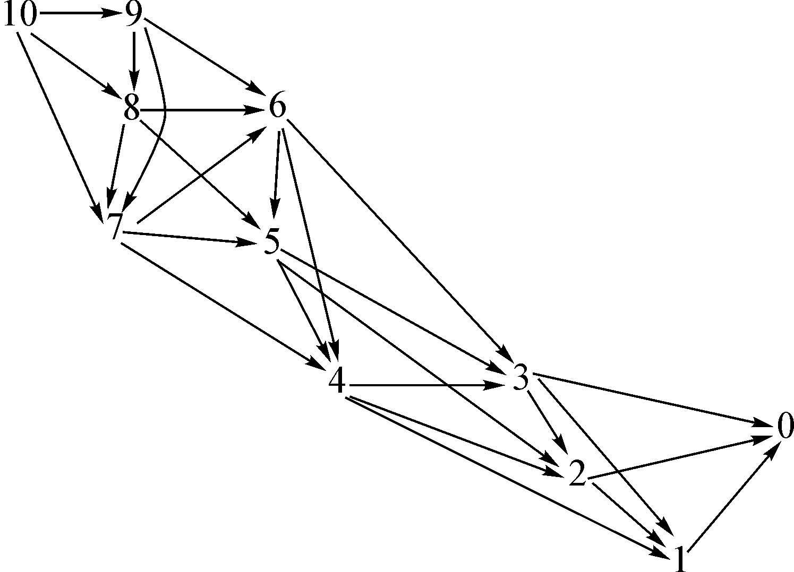
图7.4-1 取石子游戏图
根据SG函数的定义和上面的图，得出：
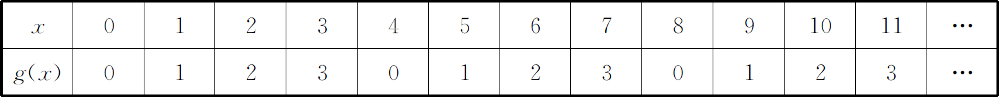
规律为：g（x）=x mod 4
根据结果，我们猜测SG函数与“P状态” (2) 和“N状态” (3) 是有关的。如果g（x）=0，那么x就是“P状态”，否则x就是“N状态”。证明是很显然的，只要根据两者的定义，考虑以下三点：
1．如果x是终止状态，那么g（x）=0；
2．一个状态x，如果g（x）≠0，那么一定存在一个x的后继y，使得g（y）=0；
3．一个状态x，如果g（x）=0，那么所有x的后继y，都有g（y）≠0。
【例7.4-2】 取石子游戏（POJ1067）
【问题描述】
有两堆石子，数量任意，可以不同。游戏开始由两个人轮流取石子。游戏规定，每次有两种不同的取法，一是可以在任意的一堆中取走任意多的石子；二是可以在两堆中同时取走相同数量的石子。最后把石子全部取完者为胜者。现在给出初始的两堆石子的数目，如果轮到你先取，假设双方都采取最好的策略，问最后你是胜者还是败者？
【输入格式】
输入包含若干行，表示若干种石子的初始情况，其中每一行包含两个正整数a和b，表示两堆石子的数目，a和b都不大于1000000000。
【输出格式】
输出对应也有若干行，每行包含一个数字1或0，如果最后你是胜者，则为1，反之，则为0。
【输入样例】
2 1
8 4
4 7
【输出样例】
0
1
0
【问题分析】
本题就是所谓的威佐夫博弈（Wythoff Game）：有两堆各若干个物品，两个人轮流从某一堆取、或同时从两堆中取同样多的物品，规定每次至少取一个，多者不限，最后取光者得胜。问：先手是否必胜？
如果局面（a，b）是先手必负的，那么对于任意x＞b，y＞a，局面（a，x），（y，b）先手必胜。
所以可以知道，任何数字只能出现在一个先手必负的局面中。
同样，如果局面（a，b）是先手必负的，那么对于任何k＞0，（a+k，b+k）也是先手必胜的。
我们如果用计算机算出前面几个先手必负的局面，可以得到：
| a | b | b-a |
| 0 | 0 | 0 |
| 1 | 2 | 1 |
| 3 | 5 | 2 |
| 4 | 7 | 3 |
| 6 | 10 | 4 |
| 8 | 13 | 5 |
| 9 | 15 | 6 |
| … | … | … |
看的出非常有规律，一是两个数字的差值成等差数列。二是对于第一个数，我们发现“是未在前面出现过的最小自然数”。经过试验，进一步猜测为：第n个先手必负的局面（an ，bn ）的an =int（n*（1+
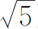
）/2），bn =an +n。有兴趣的读者，可以参阅相关证明。n=bn -an ，若an =int（n*（1+ ）/2）先手必败。由此，我们可以写出一个非常简洁的解答方案：
#include＜bits/stdc++．h＞
using namespace std;
int a，b;
int main（）{
while（scanf（"%d%d"，＆a，＆b）!=-1）{
if（a＞b）swap（a，b）;
printf（"%d＼n"，int（（1+sqrt（5.0））/2*（b-a））!=a）;
}
return 0;
}
快速傅里叶变换（Fast Fourier Transform，简称FFT）在信息学竞赛中的主要作用是用来求“卷积”，或者说多项式乘法。朴素的多项式乘法为各系数相乘，时间复杂度是的Θ(n2)，通过快速傅里叶变换可以降为Θ(nlog2 n)。
对于形如
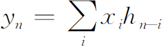
的式子，我们称y为xh的卷积。首先，定义多项式的形式为：
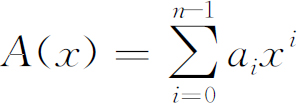
，其中ai 为系数，n为次数，这种表示方法称为“系数表示法”，一个多项式是由其系数确定的。如果把每个系数都看成一个未知数，一个n次的多项式就可以等价地换成n个等式（yi =ai ），相当于平面上的n组坐标(xi ,yi )，这种表示方法叫做“点值表示法”。我们可以利用点值表示法，分3步快速求出多项式乘积：
（1）由系数表示法转换成点值表示法；
（2）利用点值表示法，求两个多项式的乘积；
（3）再将点值表示法转换成系数表示法；
对于步骤（2），给出两个n次多项式A和B的点值表达式，我们可以在Θ(n)的时间复杂度内求出其乘积C的点值表达式，C是2n-1次的。
假设A的点值表达式为：{(x0 ,y0 ),(x1 ,y1 ),…(xn-1 ,yn-1 )}
B的点值表达式为：{(x0 ,y′0 ),(x1 ,y′1 ),…(xn-1 ,y′n-1 )}
则C的点值表达式为：{(x0 ,y0 y′0 ),(x1 ,y1 y′1 ),…(xn-1 ,yn-1 y′n-1 )}
下面，我们重点分析步骤（1）。
n次单位复数根是满足ωn =1的复数ω。n次单位复数根有n个，分别是e2πik/n ，其中：i为虚数单位，k为整数，0≤k＜n。将值e2πi/n 称为主n次单位根，所有其他n次单位复数根都是ωn 的次幂。我们可以利用复数的指数形式定义来解释这个式子：eiθ =cos(θ)+isin(θ)。
消去引理：对任何整数n≥0，k≥0，d＞0，有
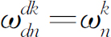
。证明：带入定义易证得
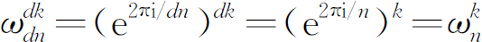
折半引理：如果n是大于0的偶数，那么n的n个单位复数根的平方的集合就是n/2的n/2个单位复数根的平方的集合。
证明：对于任意非数整数k，我们有
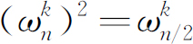
。对于所有n次单位复数根进行平方，那么获得每个n/2次单位复数根正好两次，因为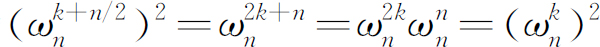
，因此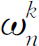
与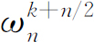
平方相同。折半引理是用分治算法实现快速傅里叶变换的重要理论前提。如何具体实现呢？可以利用单位复数根的特殊性质进行分治A(x)，对于多项式，将奇偶系数分离，定义两个新的多项式A[0] (x)和A[1] x：
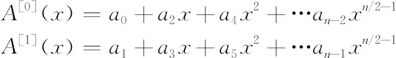
于是有A(x)=A[0] (x2 )+xA[1] (x2 )。这样就把问题转化为求
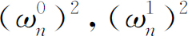
,…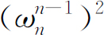
在A[0] (x)和A[1] (x)的值。再根据折半引理，我们发现前半部分的值与后半部分的值相同，这样就把问题分成了两个子问题，对于这两个子问题再进行递归求解。这样就可以在Θ(nlog2 n)的时间复杂度内求出点值表达式。在求快速傅里叶变换的过程中，我们需要将奇偶系数分离，如次数为8的多项式，分离出系数序列为：0，4，2，6，1，5，3，7。这组数有什么特征呢？用二进制表示这几个数得到：000，100，010，110，001，101，011，111。我们将每个二进制翻转得到：000，001，010，011，100，101，110，111。不难发现，其值是递增的。
对于步骤（3）,我们通过矩阵乘法不难发现，如果将点值转化为系数只要将点值表达式做一遍快速傅里叶变换，最后对每一项除以len即可。
当然，因为单位复数根的特殊性，一些操作要特殊处理。下面给出实现快速傅里叶变换的主要代码。
const double PI=acos（-1.0）;
struct Virt{
double r，i;
Virt（double r=0.0，double i=0.0）{
this-＞r=r;
this-＞i=i;
}
Virt operator+（const Virt ＆x）{
return Virt（r+x．r，i+x．i）;
}
Virt operator-（const Virt ＆x）{
return Virt（r-x．r，i-x．i）;
}
Virt operator * （const Virt ＆x）{
return Virt（r * x．r-i * x．i，i * x．r+r * x．i）;
}
};
void Rader（Virt F［］，int len）{
int j=len ＞＞ 1;
for（int i=1; i＜len-1; i++）{
if（i ＜ j）swap（F［i］，F［j］）;
int k=len ＞＞ 1;
while（j ＞=k）{
j-=k;
k ＞＞=1;
}
if（j ＜ k）j+=k;
}
}
void FFT（Virt F［］，int len，int on）{
Rader（F，len）;
for（int h=2; h＜=len; h＜＜=1）{
Virt wn（cos（-on*2*PI/h），sin（-on*2*PI/h））;
for（int j=0; j＜len; j+=h）{
Virt w（1，0）;
for（int k=j; k＜j+h/2; k++）{
Virt u=F［k］;
Virt t=w * F［k+h / 2］;
F［k］=u+t;
F［k+h / 2］=u-t;
w=w * wn;
}
}
}
if（on==-1）
for（int i=0; i＜len; i++）
F［i］．r /=len;
}
void Conv（Virt a［］，Virt b［］，int len）{
FFT（a，len，1）;
FFT（b，len，1）;
for（int i=0; i＜len; i++）
a［i］=a［i］*b［i］;
FFT（a，len，-1）;
}
【例7.5-1】 match（2014年江苏省队选拔，match*，256MB，2秒）
【问题描述】
兔子们在玩两个串的游戏。给定两个字符串S和T，兔子们想知道T在S中出现了几次，分别在哪些位置出现。注意T中可能有“？”字符，这个字符可以匹配任何字符。
【输入格式】
两行两个字符串，分别代表S和T。
【输出格式】
第一行一个正整数k，表示T在S中出现了几次。
接下来k行正整数，分别代表T每次在S中出现的开始位置。按照从小到大的顺序输出，S下标从0开始。
【样例输入】
ababcadaca
a？a
【样例输出】
3
0
5
7
【数据限制】
对于10%的数据， S和T的长度不超过100；
对于另外20%的数据，T中无“？”；
对于100%的数据，S长度不超过10^5，T长度不会超过S。S中只包含小写字母，T中只包含小写字母和“？”。
【问题分析】
我们将T翻转，并令：
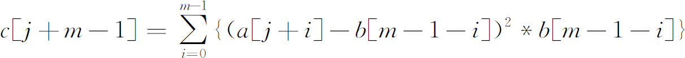
其中，m为T的长度，a［i］表示S的第i个字符（a视为1，b视为2，依次类推），b［i］为T的第i个字符，当T［i］=‘？’时，令b［i］=0。
可以发现，c［j+m-1］=0当且仅当S从第j个位置开始可以匹配上T。于是，计算出所有的c即可，如果展开不难发现是三个卷积的和，于是，使用快速傅立叶变换求解即可，时间复杂度为Θ(nlog2 n)。
将某一元素翻转以构成卷积形式是一种常用技巧。
【参考程序】
#include＜bits/stdc++．h＞
using namespace std;
#define LL long long
int mod=1004535809;
int n，N，M;
LL a［1＜＜18］，b［1＜＜18］，A［1＜＜18］，B［1＜＜18］，h［1＜＜18］，sum［100005］;
LL ww［1＜＜19］，*e=ww+（1＜＜18）;
int ans［100005］;
LL ksm（LL a，int b）{
LL ans=1;
for（;b;b＞＞=1，a=a*a%mod）
if（b＆1）
ans=ans*a%mod;
return ans;
}
char s［100005］;
void DFT（LL *x，int n，int c）{
LL *a=x，*b=h，w，l，r;
int i，j，k;
for（i=n;i＞1;i＞＞=1，swap（a，b））
for（j=0;j＜n;j+=i）
for（k=0;k＜i;k+=2）
b［j+（k＞＞1）］=a［j+k］，b［j+（k＞＞1）+（i＞＞1）］=a［j+k+1］;
for（i=2;i＜=n;i＜＜=1，swap（a，b））
for（w=0，k=0;k＜（i＞＞1）;k++，w+=n/i*c）
for（j=0;j＜n;j+=i）{
l=a［j+k］，r=e［w］*a［j+（i＞＞1）+k］%mod;
b［j+k］=（（l+r＞=mod）？l+r-mod∶l+r）;
b［j+（i＞＞1）+k］=（（l-r＜0）？l-r+mod∶l-r）;
}
for（int i=0;i＜n;i++）
x［i］=a［i］;
}
void solve（int c）{
DFT（A，n，1）;DFT（B，n，1）;
for（int i=0;i＜n;i++）
A［i］=A［i］*B［i］%mod;
DFT（A，n，-1）;
int ni=ksm（n，mod-2）;
for（int i=M-1;i＜N;i++）
sum［i］=（sum［i］+A［i］*ni*c）%mod;
}
int main（）{
scanf（"%s"，s），N=strlen（s）;
for（int i=0;i＜N;i++）a［i］=s［i］-'a'+1;
scanf（"%s"，s），M=strlen（s）;
for（int i=0;i＜M;i++）b［M-i-1］=（s［i］=='？'？0∶s［i］-'a'+1）;
for（n=1;n＜N+M;n＜＜=1）;
e［0］=e［-n］=1;e［1］=e［1-n］=ksm（3，（mod-1）/n）;
for（int i=2;i＜n;i++）e［i-n］=e［i］=e［i-1］*e［1］%mod;
for（int i=0;i＜n;i++）A［i］=1，B［i］=b［i］*b［i］*b［i］;
solve（1）;
for（int i=0;i＜n;i++）A［i］=a［i］*a［i］，B［i］=b［i］;
solve（1）;
for（int i=0;i＜n;i++）A［i］=a［i］，B［i］=b［i］*b［i］;
solve（-2）;
for（int i=M-1;i＜N;i++）{
if（!sum［i］）
ans［++ans［0］］=i-M+1;
}
for（int i=0;i＜=ans［0］;i++）
printf（"%d＼n"，ans［i］）;
return 0;
}
利用快速傅里叶变换加速了卷积运算的速度。在离散正交变换的理论中，已经证明在复数域内，具有循环卷积特性的唯一变换是DFT（系数表示法变换为点值表示法），所以，FFT是更简单、最高效的离散正交变换。但是，FFT涉及大量浮点类型数据操作和正弦余弦运算，常数很大，此时，我们可以利用以数论为基础的具有循环卷积性质的“快速数论变换（Fast Number Theoretic Transforms，简称FNTT）”。
在（mod p）意义下，有
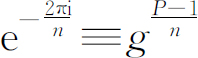
(mod p)，其中，g是素数P的原根。我们可以把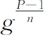
看成是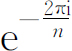
的等价。所以程序只需要在FFT的基础上稍作修改即可。一般来说，p选取“费马素数”。【例7.6-1】 大数乘法（51NOD 1028）
【问题描述】
给出2个大整数A，B，计算A*B的结果。
【输入格式】
第1行：大数A；第2行：大数B。A，B的长度小于等于100000，A，B大于等于0。
【输出格式】
输出A * B的结果。
【输入样例】
123456
234567
【输出样例】
28958703552
【问题分析】
我们可以把十进制数看成一个多项式，每一位就是一个系数，做一遍多项式乘法，最后再处理一下进位就可以了。
【参考程序】
#include＜bits/stdc++．h＞
using namespace std;
#define LL long long
int mod=1004535809;
int n，N，M;
LL A［1＜＜18］，B［1＜＜18］，h［1＜＜18］，sum［100005］;
LL ww［1＜＜19］，*e=ww+（1＜＜18）;
int ans［100005］;
LL ksm（LL a，int b）{
LL ans=1;
for（;b;b＞＞=1，a=a*a%mod）
if（b＆1）
ans=ans*a%mod;
return ans;
}
char s［100005］;
void DFT（LL *x，int n，int c）{
LL *a=x，*b=h，w，l，r;
int i，j，k;
for（i=n;i＞1;i＞＞=1，swap（a，b））
for（j=0;j＜n;j+=i）
for（k=0;k＜i;k+=2）
b［j+（k＞＞1）］=a［j+k］，b［j+（k＞＞1）+（i＞＞1）］=a［j+k+1］;
for（i=2;i＜=n;i＜＜=1，swap（a，b））
for（w=0，k=0;k＜（i＞＞1）;k++，w+=n/i*c）
for（j=0;j＜n;j+=i）{
l=a［j+k］，r=e［w］*a［j+（i＞＞1）+k］%mod;
b［j+k］=（（l+r＞=mod）？l+r-mod∶l+r）;
b［j+（i＞＞1）+k］=（（l-r＜0）？l-r+mod∶l-r）;
}
for（int i=0;i＜n;i++）
x［i］=a［i］;
}
int main（）{
scanf（"%s"，s），N=strlen（s）;
for（int i=0;i＜N;i++）A［N-i-1］=s［i］-'0';
scanf（"%s"，s），M=strlen（s）;
for（int i=0;i＜M;i++）B［M-i-1］=s［i］-'0';
for（n=1;n＜N+M;n＜＜=1）;
e［0］=e［-n］=1;e［1］=e［1-n］=ksm（3，（mod-1）/n）;
for（int i=2;i＜n;i++）e［i-n］=e［i］=e［i-1］*e［1］%mod;
DFT（A，n，1）;DFT（B，n，1）;
for（int i=0;i＜n;i++）
A［i］=A［i］*B［i］%mod;
DFT（A，n，-1）;
int ni=ksm（n，mod-2）;
for（int i=0;i＜n;i++）
A［i］=A［i］*ni%mod;
for（int i=0;i＜n-1;i++）
A［i+1］+=A［i］/10，
A［i］%=10;
int i=n-1;while（!A［i］）i--;
for（;i＞=0;i--）
putchar（'0'+A［i］）;
puts（""）;
return 0;
}
【例7.6-2】 sequence（2015年山东省队选拔，match*，128MB，6秒）
【问题描述】
小C有一个集合S，里面的元素都是小于M的非负整数。他用程序编写了一个数列生成器，可以生成一个长度为N的数列，数列中的每个数都属于集合S。小C用这个生成器生成了许多这样的数列。但是小C有一个问题需要你的帮助：给定整数x，求所有可以生成出的，且满足数列中所有数的乘积mod M的值等于x的不同的数列的有多少个。小C认为，两个数列{Ai }和{Bi }不同，当且仅当至少存在一个整数i，满足Ai ≠Bi 。另外，小C认为这个问题的答案可能很大，因此他只需要你帮助他求出答案mod 1004535809的值就可以了。
【输入格式】
第一行四个整数，N、M、x、|S|，其中|S|为集合S中元素个数。
第二行，|S|个整数，表示集合S中的所有元素。
【输出格式】
一行一个整数，表示你求出的权值和 mod 1004535809的值。
【样例输入】
4 3 1 2
1 2
【样例输出】
8
【样例说明】
可以生成的满足要求的不同的数列有（1，1，1，1）、（1，1，2，2）、（1，2，1，2）、（1，2，2，1）、（2，1，1，2）、（2，1，2，1）、（2，2，1，1）、（2，2，2，2）。
【数据规模和约定】
对于10%的数据，1≤N≤1000；
对于30%的数据，3≤M≤100；
对于60%的数据，3≤M≤800；
对于全部的数据，1≤N≤109 ，3≤M≤8000，M为质数，1≤x≤M-1，输入数据保证集合S中元素不重复。
【问题分析】
求出m的原根g，然后对于每个ai 求出
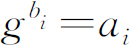
。则有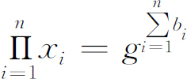
。我们求出生成函数f(x)，问题就变成了求f(x)|n| 的第m项，做一遍FNTT即可。1004535809的原根是3。【参考程序】
#include＜bits/stdc++．h＞
using namespace std;
#define LL long long
const int maxn=14;
int mod=1004535809;
int n，N，M，X，S;
LL gg;
LL A［1＜＜maxn］，B［1＜＜maxn］;
LL ww［1＜＜maxn+1］，*e=ww+（1＜＜maxn），h［1＜＜maxn］;
int fg［10000］;
structmul{
LL s［1＜＜maxn］;
}f0，f;
LL ksm（LL a，int b，int mod）{
LL ans=1;
for（;b;b＞＞=1，a=a*a%mod）
if（b＆1）
ans=ans*a%mod;
return ans;
}
int findg（int s）{
int q［1000］={0};
for（int i=2;i＜s-1;i++）
if（（s-1）%i==0）
q［++q［0］］=i;
for（int i=2;;i++）{
bool p=1;
for（int j=1;j＜=q［0］＆＆p;j++）
if（ksm（i，q［j］，s）==1）
p=0;
if（p）return i;
}
return-1;
}
void DFT（LL *x，int n，int c）{
LL *a=x，*b=h，w，l，r;
int i，j，k;
for（i=n;i＞1;i＞＞=1，swap（a，b））
for（j=0;j＜n;j+=i）
for（k=0;k＜i;k+=2）
b［j+（k＞＞1）］=a［j+k］，b［j+（k＞＞1）+（i＞＞1）］=a［j+k+1］;
for（i=2;i＜=n;i＜＜=1，swap（a，b））
for（w=0，k=0;k＜（i＞＞1）;k++，w+=n/i*c）
for（j=0;j＜n;j+=i）{
l=a［j+k］，r=e［w］*a［j+（i＞＞1）+k］%mod;
b［j+k］=（（l+r＞=mod）？l+r-mod∶l+r）;
b［j+（i＞＞1）+k］=（（l-r＜0）？l-r+mod∶l-r）;
}
for（int i=0;i＜n;i++）
x［i］=a［i］;
}
void plu（LL *x，mul A，mul B）{
DFT（A．s，n，1）;DFT（B．s，n，1）;
for（int i=0;i＜n;i++）
A．s［i］=A．s［i］*B．s［i］%mod;
DFT（A．s，n，-1）;
int ni=ksm（n，mod-2，mod）;
for（int i=0;i＜M-1;i++）
x［i］=0;
for（int i=0;i＜n;i++）
x［i%（M-1）］+=A．s［i］*ni，x［i%（M-1）］%=mod;
}
int main（）{
scanf（"%d%d%d%d"，＆N，＆M，＆X，＆S）;
gg=findg（M）;
LL ss=1;
for（int i=1;i＜M-1;i++）
ss=ss*gg%M，
fg［ss］=i;
for（int i=1，x;i＜=S;i++）{
scanf（"%d"，＆x）;
if（x）f0．s［fg［x］］=1;
}
for（n=1;n＜=M*2;n＜＜=1）;
e［0］=e［-n］=1;e［1］=e［1-n］=ksm（3，（mod-1）/n，mod）;
for（int i=2;i＜n;i++）e［i-n］=e［i］=e［i-1］*e［1］%mod;
for（f．s［0］=1;N;N＞＞=1，plu（f0．s，f0，f0））
if（N＆1）
plu（f．s，f，f0）;
printf（"%d＼n"，int（f．s［fg［X］］））;
return 0;
}
1．Snarf（snarf．*，64MB，2秒）
【问题描述】
输入a，求出一个最小的n和k（n＞k≥a），使得能在1～n之间能找到一个k，且1～k-1的和等于k+1～n的和。
【输入格式】
输入一行一个正整数a（3≤a≤1940500）。
【输出格式】
输出一行2个数，表示最小的正整数k和n（严格用一个空格隔开）。
【输入样例】
3
【输出样例】
6 8
【样例说明】
n=8，k=6，1+2+3+4+5=15=7+8
2．证明方程6-3x=2^x在区间［1，2］内有唯一一个实数解，并求出这个实数解（精确度0.1）。
3．Pie（POJ3122）
【问题描述】
My birthday is coming up and traditionally I'm serving pie．Not just one pie，no，I have a number N of them，of various tastes and of various sizes．F of my friends are coming to my party and each of them gets a piece of pie．This should be one piece of one pie，not several small pieces since that looks messy．This piece can be one whole pie though．
My friends are very annoying and if one of them gets a bigger piece than the others，they start complaining．Therefore all of them should get equally sized （but not necessarily equally shaped）pieces，even if this leads to some pie getting spoiled （which is better than spoiling the party）．Of course，I want a piece of pie for myself too，and that piece should also be of the same size．
What is the largest possible piece size all of us can get？ All the pies are cylindrical in shape and they all have the same height 1，but the radii of the pies can be different．
【输入格式】
One line with a positive integer： the number of test cases．Then for each test case：
One line with two integers N and F with 1≤N，F≤10000： the number of pies and the number of friends．
One line with N integers ri with 1≤ri≤10000： the radii of the pies．
【输出格式】
For each test case，output one line with the largest possible volume V such that me and my friends can all get a pie piece of size V．The answer should be given as a floating point number with an absolute error of at most 10-3 ．
【输入样例】
3
3 3
4 3 3
1 24
5
10 5
1 4 2 3 4 5 6 5 4 2
【输出样例】
25.1327
3．1416
50.2655
4．Strange Fuction（HDU2899）
【问题描述】
Now，here is a fuction：
F（x）=6 * x^7+8*x^6+7*x^3+5*x^2-y*x （0≤x≤100）
Can you find the minimum value when x is between 0 and 100．
【输入格式】
The first line of the input contains an integer T（1≤T≤100）which means the number of test cases．Then T lines follow，each line has only one real numbers Y．（0＜Y＜1e10）
【输出格式】
Just the minimum value （accurate up to 4 decimal places），when x is between 0 and 100．
【输入样例】
2
100
200
【输出样例】
-74.4291
-178.8534
5．传送带（2010年四川省队选拔，walk．*，64MB，2秒）
【问题描述】
在一个2维平面上有两条传送带，每一条传送带可以看成是一条线段。两条传送带分别为线段AB和线段CD。lxhgww在AB上的移动速度为P，在CD上的移动速度为Q，在平面上的移动速度R。现在lxhgww想从A点走到D点，他想知道最少需要走多长时间。
【输入格式】
输入数据第一行是4个整数，表示A和B的坐标，分别为Ax，Ay，Bx，By；
第二行是4个整数，表示C和D的坐标，分别为Cx，Cy，Dx，Dy；
第三行是3个整数，分别是P，Q，R。
【输出格式】
输出数据为一行，表示lxhgww从A点走到D点的最短时间，保留到小数点后2位。
【输入样例】
0 0 0 100
100 0 100 100
2 2 1
【输出样例】
136.60
【数据范围】
对于100%的数据满足：1≤Ax，Ay，Bx，By，Cx，Cy，Dx，Dy≤1000；1≤P，Q，R≤10
6．骑行川藏（NOI2012，bicycling．*，64MB，2秒）
【问题描述】
蛋蛋非常热衷于挑战自我，今年暑假他准备沿川藏线骑着自行车从成都前往拉萨。川藏线的沿途有着非常美丽的风景，但在这一路上也有着很多的艰难险阻，路况变化多端，而蛋蛋的体力十分有限，因此在每天的骑行前设定好目的地、同时合理分配好自己的体力是一件非常重要的事情。
由于蛋蛋装备了一辆非常好的自行车，因此在骑行过程中可以认为他仅在克服风阻做功（不受自行车本身摩擦力以及自行车与地面的摩擦力影响）。某一天他打算骑N段路，每一段内的路况可视为相同：对于第i段路，我们给出有关这段路况的3个参数si ，ki ，vi ′，其中si 表示这段路的长度，ki 表示这段路的风阻系数，vi ′表示这段路上的风速（正数表示在这段路上他遇到了顺风，反之则意味着他将受逆风影响）。若某一时刻在这段路上骑车速度为v，则他受到的风阻大小为F=ki *（v-vi ′）^2（这样若在长度为s的路程内保持骑行速度v不变，则他消耗能量（做功）E=ki *（v-vi ′'）^2*s。
设蛋蛋在这天开始时的体能值是Eu ，请帮助他设计一种行车方案，使他在有限的体力内用最短的时间到达目的地。请告诉他最短的时间T是多少。
【评分方法】
本题没有部分分，你程序的输出只有和标准答案的差距不超过0.000001时，才能获得该测试点的满分，否则不得分。
【数据规模与约定】
对于10%的数据，N=1；
对于40%的数据，N≤2；
对于60%的数据，N≤100；
对于80%的数据，N≤1000；
对于所有数据，N≤10000，0≤Eu ≤108 ，0＜si ≤100000，-100＜vi ′＜100。数据保证最终的答案不会超过105 。
【提示】
必然存在一种最优的体力方案满足：蛋蛋在每段路上都采用匀速骑行的方式。
【输入格式】
第一行包含一个正整数N和一个实数Eu ，分别表示路段的数量以及蛋蛋的体能值。接下来N行分别描述N个路段，每行有3个实数si ，ki ，vi ′，分别表示第i段路的长度，风阻系数以及风速。
【输出格式】
输出一个实数T，表示蛋蛋到达目的地消耗的最短时间，要求至少保留到小数点后6位。
【输入样例】
3 10000
10000 10 5
20000 15 8
50000 5 6
【输出样例】
12531.34496464
【样例说明】
一种可能的方案是：蛋蛋在三段路上都采用匀速骑行的方式，其速度依次为5.12939919，8.03515481，6.17837967。
7．计算函数值（BZOJ3527）
【题目大意】
给出n个数qi ，定义
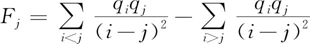
，再令Ei =Fi /qi ，求Ei 。8．不连续回文子序列（BZOJ3160）
【题目大意】
给定一个由′a′和′b′构成的字符串，求不连续回文子序列的个数。
————————————————————
(1) 在微积分中，驻点又称为临界点，是函数的一阶导数为零，即在这一点，函数的输出值停止增加或减少。
(2) P状态：双人博弈游戏中，先手必胜的状态。
(3) N状态：双人博弈游戏中，后手必胜的状态。